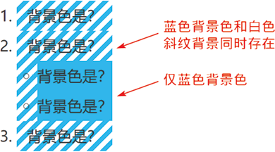

首页 > 编程笔记
CSS子代选择符（>）用法详解
子选代择符是 CSS 中非常常用、重要的一个选择符，IE7 浏览器开始支持，它和后代选择符有类似于“远房亲戚”的关系。
子代选择符只匹配第一代子元素，而后代选择符会匹配所有子元素。看一个例子，HTML结构如下：
可以看到，外层所有列表元素均是蓝色的背景色和白色的斜纹背景图案同时存在，说明既匹配了 ol li 选择器，又匹配了 ol > li 选择器，而内层列表元素的背景仅是蓝色的纯色背景，说明只匹配了 ol li 选择器。由此可以证明，ol > li 只作用于当前子 <li> 元素，而 ol li 作用于所有的后代 <li> 元素。
以上就是这两个选择符的差异。显然，后代选择符的匹配范围比子代选择符的匹配范围广，因此，在同样选择器的情况下，子代选择符的匹配性能优于后代选择符。但这种性能优势有限，不能作为选择符选型的优先考虑条件。
举个例子，有一个模块容器，类名是 .cs-module-x，这个模块在 A 区域和 B 区域的样式有一些差异，需要重置，通常的做法是给容器外层元素重新命名一个类，如 .cs-module-reset-b，此时，很多开发人员（也没想太多）就使用了子选择符：
记住，使用子选择符的主要目的是避免冲突。本例中，.cs-module-x 容器内部不可能再有一个 .cs-module-x，因此使用后代选择符绝对不会出现冲突，反而会让结构变得更加灵活，就算日后再嵌套一层标签，也不会影响布局。
适合使用子选择符的场景通常有以下 3 个：
子选择符是一把双刃剑，它通过限定关系使结构更加稳固，但同时失去了弹性和变化，需要审慎使用。
子代选择符只匹配第一代子元素，而后代选择符会匹配所有子元素。看一个例子，HTML结构如下：
<ol>
<li>背景色是？</li>
<li>背景色是？
<ul>
<li>背景色是？</li>
<li>背景色是？</li>
</ul>
</li>
<li>背景色是？</li>
</ol>
CSS 结构如下：
ol li {
background-color: deepskyblue;
}
ol > li {
background-image: repeating-linear-gradient(135deg, white 0 5px, transparent
5px 10px);
}
我们可以根据<li>元素背景色的呈现效果确定不同的选择器匹配的元素。最终的测试结果如下图所示。

图 1 子代选择符和后代选择符的测试结果截图
图 1 子代选择符和后代选择符的测试结果截图
可以看到，外层所有列表元素均是蓝色的背景色和白色的斜纹背景图案同时存在，说明既匹配了 ol li 选择器，又匹配了 ol > li 选择器，而内层列表元素的背景仅是蓝色的纯色背景，说明只匹配了 ol li 选择器。由此可以证明，ol > li 只作用于当前子 <li> 元素，而 ol li 作用于所有的后代 <li> 元素。
以上就是这两个选择符的差异。显然，后代选择符的匹配范围比子代选择符的匹配范围广，因此，在同样选择器的情况下，子代选择符的匹配性能优于后代选择符。但这种性能优势有限，不能作为选择符选型的优先考虑条件。
子代选择符的适用场景
能不用子代选择符就尽量不用，虽然它的性能优于后代选择符，但与其日后带来的维护成本相比，这实在是不值一提。举个例子，有一个模块容器，类名是 .cs-module-x，这个模块在 A 区域和 B 区域的样式有一些差异，需要重置，通常的做法是给容器外层元素重新命名一个类，如 .cs-module-reset-b，此时，很多开发人员（也没想太多）就使用了子选择符：
.cs-module-reset-b > .cs-module-x {
width: fit-content;
}
作为过来人，建议大家使用后代选择符代替：
/* 建议 */
.cs-module-reset-b .cs-module-x {
position: absolute;
}
因为一旦使用了子选择符，元素的层级关系就被强制绑定了，日后需要维护或者需求发生变化的时候如果调整了层级关系，整个样式就失效了，这时需要对 CSS 代码进行同步调整，增加了维护成本。记住，使用子选择符的主要目的是避免冲突。本例中，.cs-module-x 容器内部不可能再有一个 .cs-module-x，因此使用后代选择符绝对不会出现冲突，反而会让结构变得更加灵活，就算日后再嵌套一层标签，也不会影响布局。
适合使用子选择符的场景通常有以下 3 个：
1) 状态类名控制
例如，使用 .active 类名进行状态切换，会遇到祖先和后代都存在 .active 切换的场景，此时子选择符是必需的，可以避免影响后代元素，例如：
.active > .cs-module-x {
display: block;
}
2) 标签受限
例如，当 <li> 标签重复嵌套，同时我们无法修改标签名称或者设置类名的时候（例如 WordPress 中的第三方小工具），就需要使用子选择符进行精确控制。
.widget > li {}
.widget > li li {}
3) 层级位置与动态判断
例如，一个时间选择组件的 HTML 通常会放在 <body> 元素下，作为 <body> 的子元素以绝对定位浮层的形式呈现。但有时候其需要以静态布局嵌在页面的某个位置，这时如果我们不方便修改组件源码，则可以借助子选择符快速打一个补丁：
:not(body) > .cs-date-panel-x {
position: relative;
}
意思是当组件容器不是 <body> 子元素的时候取消绝对定位。子选择符是一把双刃剑，它通过限定关系使结构更加稳固，但同时失去了弹性和变化，需要审慎使用。
关注公众号「站长严长生」，在手机上阅读所有教程，随时随地都能学习。内含一款搜索神器，免费下载全网书籍和视频。

微信扫码关注公众号